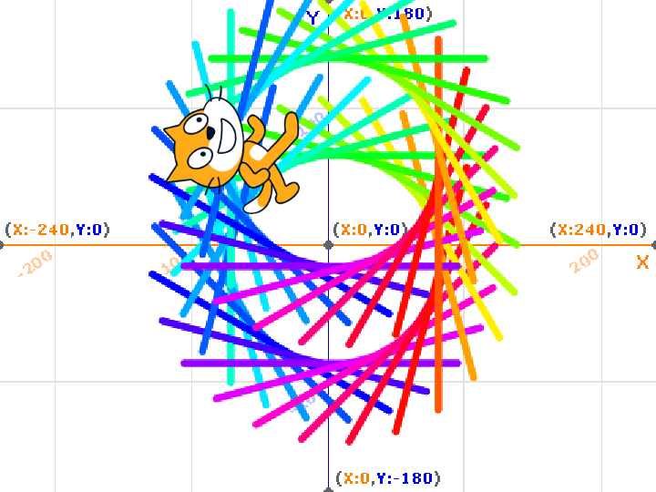
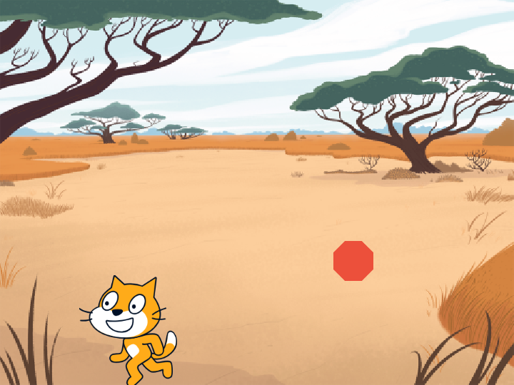

1週目のレポート ： 公大高専１年実習I-1
4-b班 机５班３０番 名前はまだない
第1週目
1-1 サイエンスアート

1.内容
スクラッチの基本的なことについて勉強した。スクラッチを開いて線を書くプログラム、 ねこ（スプライト）を動かすプログラム、繰り返し同じ動作を行うプログラム、 線の色が徐々に変わっていくプログラムなどを使って図形を描いた。
2.感想
スクラッチでゲームをつくるまでの残りの十分間をつかって、自分がつくってみたい図形を プログラムを変更することによって実際に作れたことが楽しかった。
1-2 ゲーム

1.内容
スクラッチの基本的なことについて勉強した。スプライトの数（ねこ、リンゴ）を 増やして、それぞれの動作をするプログラム、いくつかのボタン（矢印キーなど）に それぞれの動作をあてるプログラムなどを使って、画面の上から落ちてくるリンゴを 回収して点数をかせぐゲームをつくった。
2.感想
最初はある程度使い方が決まっているブロックで本当にゲームを つくれるのか疑っていたけれど、ブロックを組み合わせたり、一部ブロックの 内容を変えたりしていたら本当にゲームが出来上がっていて驚いた。
1-3 ホームページ作成
私のホームページ
1.内容
ホームページのつくり方についての基本的なことを学習した。大方出来上がっているホームページを 使って実際にホームページをつくった。
2.感想
ある程度ホームページの作り方の手順を示されている紙を読みながら、 ホームページをつくっていたにも関わらず、途中で何をすれば良いのか 分からなくなってホームページを作ることって難しいんだなーと思った